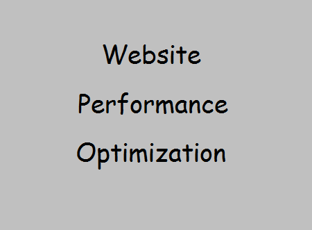

Nidhi Gaday
Web Developer
I love web development!
This is another link to a showcase my work. I decided to use this page to show a few Udacity courses I've taken and some work. It also displays and highlight my core qualifications and my work.
